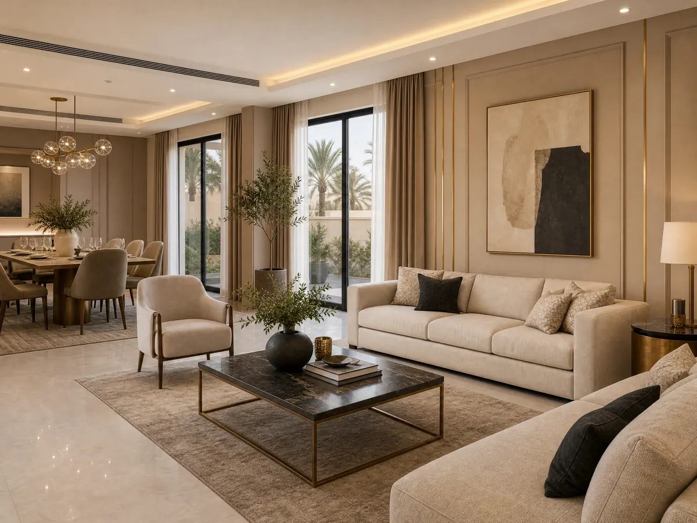

جدّد منزلك باحترافية مع مقاول دهانات وترميم الرياض 053 116 9312
مقاول دهانات وترميم الرياض هو ما يبحث عنه أصحاب المنازل عندما تبدأ الجدران في فقدان مظهرها الجميل أو تظهر الحاجة إلى تجديد المساحات الداخلية، لكن نجاح التجديد لا يرتبط بتغيير الدهان وحده، بل يبدأ بفهم حالة المكان وتحديد العيوب التي تحتاج إلى معالجة، ثم اختيار التشطيبات التي تتناسب مع استخدام الغرف والميزانية المتاحة، فإذا كنت تريد أن يبدو منزلك أكثر أناقة وراحة، فإن التخطيط الجيد يساعدك على تجنب القرارات المتسرعة وتحقيق استفادة أكبر من كل خطوة.
وقبل الاتفاق على أي أعمال من المهم أن تعرف الفرق بين الترميم والدهانات والديكور الداخلي لأن كل خدمة لها نطاق مختلف ومتطلبات خاصة، وتقدم ديكورات الأحلام حلولًا للديكور الداخلي في الرياض تشمل الجبس بورد وبديل الرخام وورق الجدران والباركيه والتكسيات الخشبية والشيبورد، ويمكنك التواصل مع الشركة لمعرفة التفاصيل المتاحة ومناقشة الأفكار التي تناسب مشروعك.
مقاول دهانات وترميم الرياض
إذا كنت تخطط لتجديد شقة أو فيلا فابدأ باختيار أفضل مقاول دهانات وترميم الرياض وحدد المشكلات التي تريد حلها قبل التفكير في الألوان والشكل النهائي، لأن معرفة احتياجات المكان من البداية تساعدك على ترتيب الأولويات ومقارنة الخدمات المناسبة دون إنفاق الميزانية على تغييرات لا تعالج المشكلة الأساسية:
- افحص الجدران والأسقف: ابحث عن التشققات أو آثار الرطوبة أو تقشر الطلاء، وحدد ما إذا كانت هناك حاجة إلى فحص متخصص قبل البدء في التشطيب.
- حدد نطاق التجديد: هل تريد تجديد الجدران فقط، أم تغيير مظهر الأسقف والأرضيات وإضافة تفاصيل ديكورية جديدة.
- رتب الأعمال حسب الأولوية: عالج المشكلات التي تؤثر في سلامة السطح أولًا، ثم انتقل إلى التشطيبات والألوان والعناصر الجمالية.
- ضع ميزانية واضحة: خصص مبلغًا للأعمال الأساسية، واترك مساحة للتكاليف الإضافية التي قد تظهر بعد فحص الموقع.
- اطلب تفاصيل مكتوبة: تأكد من أن عرض السعر يوضح نطاق العمل والخامات والتكاليف والمدة المتوقعة بدلًا من الاكتفاء بتقدير عام.
- اختر مقدم الخدمة بحسب تخصصه: تحقق من أن الجهة التي تتواصل معها تقدم الأعمال المطلوبة فعلًا، سواء كانت دهانات أو ترميمًا أو ديكورًا داخليًا.
اطلع على: ما الفرق بين الشيبورد وبديل الشيبورد؟
متى تحتاج إلى ترميم الجدران قبل التشطيب؟
قد يبدو الجدار مناسبًا للطلاء من النظرة الأولى لكن بعض العيوب تحتاج إلى معالجة قبل إضافة أي طبقة جديدة، ولهذا من المهم اختيار أفضل مقاول دهانات وترميم الرياض لتقييم السطح وتحديد سبب المشكلة بدلًا من تغطيتها بشكل مؤقت ثم الاضطرار إلى إعادة العمل:
- التشققات الواضحة: ينبغي تحديد طبيعتها وسببها قبل إصلاحها، خاصة إذا كانت متكررة أو تتسع بمرور الوقت.
- تقشر الدهان القديم: قد يرتبط بضعف التصاق الطلاء أو سوء تجهيز السطح، ولذلك يحتاج إلى تقييم قبل تطبيق طبقة جديدة.
- آثار الرطوبة: لا يكفي إخفاء البقع بالدهان إذا كان مصدر الرطوبة مستمرًا، بل ينبغي معرفة السبب ومعالجته من خلال الجهة المختصة.
- تفاوت سطح الجدار: قد تحتاج بعض الأسطح إلى تجهيز أو تسوية حتى يظهر التشطيب بصورة متناسقة.
- تلف أجزاء من التشطيب: إذا كانت هناك أجزاء متضررة، فمن الأفضل تحديد نطاق الإصلاح قبل شراء الخامات أو اختيار اللون النهائي.
شاهد الآن:أفضل معلم دهانات وديكورات بالرياض
خطوات عمل مقاول ترميم وتشطيب من ديكورات الاحلام
عندما يجتمع الترميم مع التشطيب يصبح ترتيب مراحل العمل مهمًا لتقليل التعارض بين الأعمال المختلفة، فاختيار مقاول دهانات وترميم الرياض الأرضيات قبل تحديد بعض تفاصيل الجدران أو تنفيذ الديكورات دون تخطيط للإضاءة قد يسبب تعديلات إضافية، ولهذا من الأفضل تنظيم المشروع وفق خطوات واضحة:
- ابدأ بالأعمال الأساسية: ينبغي تحديد المشكلات التي تحتاج إلى إصلاح قبل الانتقال إلى تركيب عناصر الديكور أو تنفيذ التشطيبات النهائية.
- خطط لتوزيع الإضاءة: يساعد تحديد مواقع الإضاءة مبكرًا على تنسيق السقف والجدران مع التصميم المطلوب.
- نسق الخامات والألوان: اختر درجات تتناسب مع الأثاث والأرضيات، حتى تبدو جميع العناصر جزءًا من تصميم واحد.
- حدد ترتيب التنفيذ: اتفق مع مقدمي الخدمات على تسلسل الأعمال لتقليل احتمالات تلف التشطيبات المنجزة أثناء تنفيذ أعمال أخرى.
- راجع التفاصيل قبل الاستلام: افحص العناصر التي تم تنفيذها وتأكد من مطابقتها لما اتفقت عليه قبل إغلاق المشروع أو الانتقال إلى مرحلة جديدة.
كيف تختار التشطيبات التي تناسب منزلك؟
التشطيب الناجح من مقاول دهانات وترميم الرياض ليس بالضرورة أن يكون الأكثر تكلفة أو ازدحامًا بالتفاصيل، بل هو الذي يحقق التوازن بين ذوقك وطبيعة المساحة وطريقة استخدامها، وعندما تختار الخامات على أساس احتياجاتك الفعلية، يمكنك الوصول إلى مظهر مميز دون إضافة عناصر لا تخدم التصميم:
- الجبس بورد: يمكن استخدامه في تصميم الأسقف والجدران لإضافة تفاصيل عصرية تتناسب مع المساحة والإضاءة.
- بديل الرخام: قد يناسب بعض الجدران التي تحتاج إلى مظهر مختلف، بحسب التصميم وطبيعة الاستخدام.
- ورق الجدران: يمنحك فرصة لإضافة نقوش أو ملمس بصري مميز، خاصة عند تخصيصه لجدار محدد.
- الباركيه: يساعد على إكمال التصميم الداخلي عندما تتناسق درجة الأرضية مع ألوان الجدران والأثاث.
- التكسيات الخشبية: تضيف عنصرًا بصريًا دافئًا ويمكن دمجها مع الألوان المحايدة والتصاميم الحديثة.
- الشيبورد: يمكن الاستفسار عن الحلول التي تناسب احتياجك ضمن خيارات الديكور المتاحة.
اقرأ أيضًا:بديل الشيبورد الرياض: الحل الأمثل والأكثر متانة
ماذا يقدم مقاول ترميم شمال الرياض؟
إذا كنت تبحث عن مقاول دهانات وترميم الرياض وتخطط لتجديد منزلك، فمن المفيد تجهيز معلومات المشروع قبل التواصل مع أي مقدم خدمة، لأن وصف المشكلة والمساحة ونوع التشطيب المطلوب يساعد على توضيح احتياجاتك، كما يمنحك أساسًا أفضل لطلب عرض سعر مناسب ومقارنة الخيارات:
- حدد الحي وموقع العقار: اذكر موقع المشروع بوضوح عند الاستفسار عن نطاق التغطية.
- جهز صورًا للمكان: التقط صورًا واضحة للجدران والأسقف والعناصر التي تريد تجديدها، مع العلم أن الصور لا تغني دائمًا عن المعاينة عند الحاجة إليها.
- اشرح المشكلة بدقة: وضح ما إذا كان المطلوب تجديدًا شكليًا أو إصلاح عيوب أو إضافة عناصر ديكورية.
- اطلب تفصيل التكلفة: اسأل عن المواد وأعمال التجهيز والتركيب وأي بنود إضافية قبل الموافقة.
- ناقش موعد التنفيذ: حدد الفترة المناسبة لك واستفسر عن المدة المتوقعة وفق حجم العمل ونطاقه.
- تحقق من الخدمة المطلوبة: لا تفترض أن كل شركة ديكور تقدم أعمال الدهانات والترميم العام، بل تأكد من تخصص مقدم الخدمة قبل الاتفاق.
ديكورات الأحلام لحلول الديكور الداخلي بالرياض
إذا كنت ترغب في تطوير شكل منزلك وإضافة تفاصيل تمنحه طابع مختلف، يمكنك التعرف على المقاول المختص
لدى ديكورات الأحلام ومناقشة احتياجات المساحة مع الشركة، إذ يوضح الموقع خدمات للديكور الداخلي تساعدك على استكشاف خيارات متنوعة للجدران والأسقف والأرضيات، قبل اتخاذ قرارك النهائي بشأن التصميم:
- اسم الشركة: ديكورات الأحلام.
- الموقع الإلكتروني: https://decoratalahlam.com/.
- رقم الهاتف والواتساب: 0531169312.
- الموقع: الرياض، المملكة العربية السعودية.
- الخدمات المنشورة: تركيب الجبس بورد وبديل الرخام وورق الجدران والباركيه والتكسيات الخشبية والشيبورد، بالإضافة إلى الديكورات الداخلية المتكاملة.
- رابط الخدمة الداخلية: تركيب ديكورات داخلية.
الخاتمة
اختيار المقاول المختص يبدأ من معرفة ما يحتاج إليه منزلك فعلًا، ثم ترتيب أعمال الإصلاح والتشطيب واختيار الخامات التي تناسب المساحة والميزانية، فالتخطيط الواضح يساعدك على تجنب التعديلات غير الضرورية ويمنحك فرصة أفضل للوصول إلى نتيجة متناسقة تعكس ذوقك، فلا تتردد في اختيار ديكورات الأحلام لتحقق حلمك بجودة ودقة.
الأسئلة الشائعة
1. من هو مقاول ترميم في الرياض؟
المقاول المختص هو مقدم خدمة يتولى أعمال إصلاح وتجديد المباني بحسب نطاق الاتفاق، وقد تشمل الأعمال إصلاح بعض الأجزاء المتضررة أو تجهيز الأسطح أو تحديث التشطيبات، وتختلف الخدمات من جهة إلى أخرى، لذلك من المهم تحديد المشكلة المطلوبة ومعرفة ما إذا كان مقدم الخدمة ينفذها بالفعل قبل الاتفاق على التكلفة والمدة.
2. من هو مقاول دهانات في الرياض؟
المقاول المختص هو الجهة أو الشخص الذي ينفذ أعمال الطلاء وفق نوع السطح والخامات والتشطيب المطلوب، ومن الأفضل عند الاختيار السؤال عن تجهيز الجدران والمواد المستخدمة ونطاق العمل والتكلفة، مع التأكد من أن الخدمة تشمل ما تحتاج إليه فعلًا، لأن بعض شركات الديكور تركز على العناصر الداخلية ولا تعرض الدهانات كخدمة مستقلة.
3. ما هي أفضل شركة دهانات في السعودية؟
لا توجد شركة واحدة يمكن اعتبارها الأفضل لجميع المشروعات، لأن الاختيار يعتمد على موقع العقار ونوع الدهانات المطلوبة والميزانية ونطاق التنفيذ ووضوح الاتفاق، ولذلك ننصحك بمقارنة عروض مقدمي الخدمة والتحقق من تفاصيل العمل قبل الاختيار.
هل تبحث عن تنفيذ احترافي لمشروعك؟
نحن في ديكورات الأحلام نوفر لك أفضل الخامات وأمهر الفنيين في الرياض.
تواصل معنا عبر واتساب